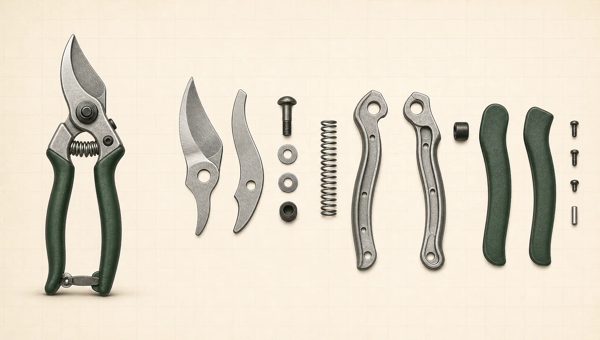

Underlying cost floorPublic labour and carrying-cost benchmarks · not an automatic quote formula
Taiwan regular earnings
+2.95% YoY
Assembly, quality control and compliance work remain labour-based even when a commodity input eases.
Taiwan working-capital benchmark
2.155% p.a.
At this public benchmark, financing inventory for 120 days is about 0.71% of financed value.
China manufacturing wages
+5.2% YoY
China's official urban non-private manufacturing wage benchmark rose even while some commodity inputs eased.
China working-capital benchmark
3.00% p.a.
At the official one-year LPR, financing inventory for 120 days is about 0.99% of financed value.
Buyer read: use a total cost bridge—material, conversion, labour, quality, compliance and carrying time—not a single spot index. Taiwan and China figures use different official periods and populations; they are directional benchmarks, not Birdland or supplier payroll, actual borrowing rates, or an automatic quote formula.

No reference photograph is published for this model yet — the material and process detail below is complete and confirmed.
Material for selected part
Process control point
Ticked routes are compared side by side. Two or three at a time.
Material routes side by side
My shortlist
Quantities stay on this device. Nothing is sent until you press Draft enquiry and send the mail yourself.
Cost movement compares the current public input proxy with its prior reference point. Process cards show the relevant cost driver—not a supplier quotation.
Buyer priority — choose the outcome you need most
Public product references
Current PDF links supplied through Birdland's public product feed.
published PDF shelf
Public planning only. AsiaSource does not create an order, quotation or account.
ASIASOURCEChoose a buying action from the menu.
WORKSPACE
Cost workspace — your shipment, priced
i
01 · Shipment setup
Build the landed-cost scenario
Birdland delivers FOB at the origin port. Set your destination, shipment value and post-FOB costs; duty and import tax remain editable planning inputs.
02 · Landed outcomeUpdates as you type
Your cost after arrival
Total landed cost—
Landed cost / unit——
03 · Retail outcomeSame shipment
Your shelf price & profit
Suggested retail / unit—
Gross profit / order—at 45% margin
04 · Origin compareSame destination, two origins
Taiwan vs China duty
Taiwan origin duty—
China origin duty——
SAIL
Plan a sailing — dates, cost, space
i
Like choosing a flight: pick origin, destination, departure date and container to estimate arrival (ETA), transit days, likely delay, indicative freight and space availability across three service options. Freight is indicative — confirm with the carrier.
DUTY
Cost comparison — Taiwan vs China origin
i
ORIGIN
Origin & Destination Decision
ipick a region
PRODUCTS
Product & Offer Finder
ipublished PDFs
Open Birdland's latest customer-facing catalogues and product information. Links are view-only documents; opening one does not place an order or send an enquiry.
QUEUE
Today's Buy Queue
i
A concise queue of the buying decisions that deserve attention now, with a remembered comeback state for this browser.
This week's brief
Since your last visit
Use the weekly brief for your own revisit, or hand-pick a few figures below when you need to forward a quick update.
MARGIN
Retail margin planner
i
Price for your shelves — turn a landed cost into a retail price at your target margin.
REORDER
Reorder timing
i
When to place your next order so stock lands before you run out — lead time + transit built in.